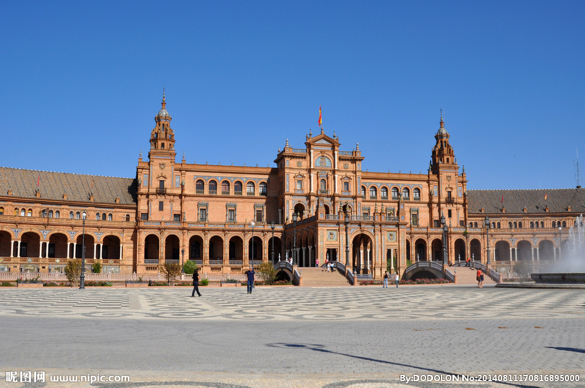
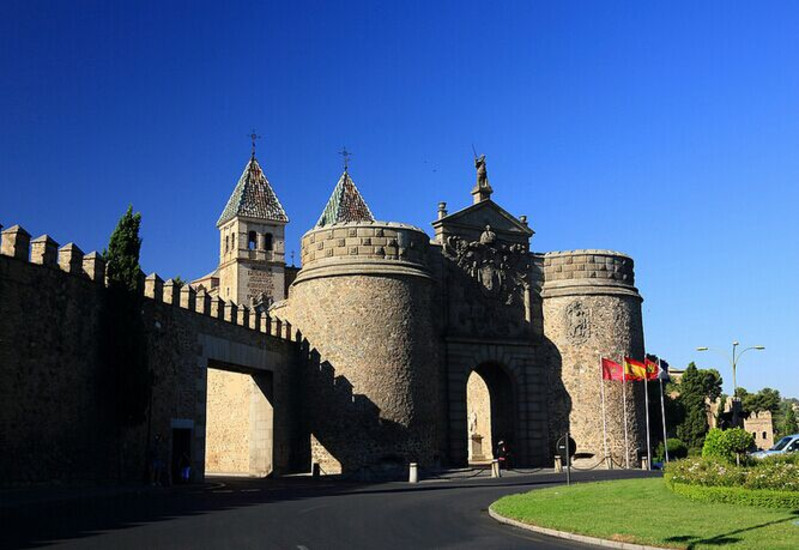
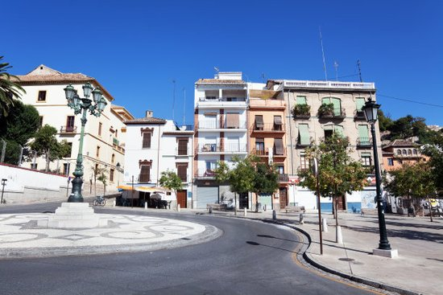
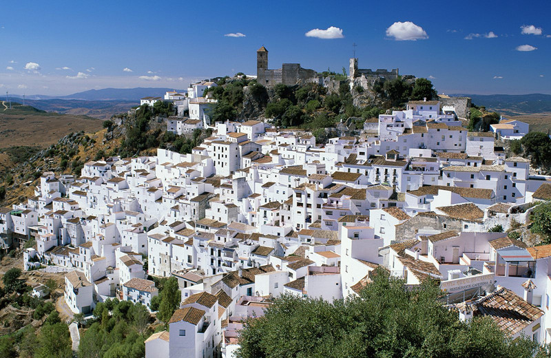
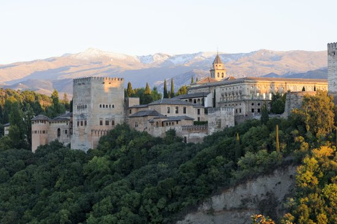
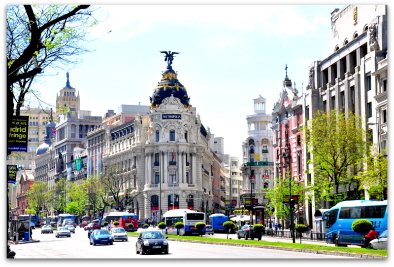

morly旅游网
一说葡萄牙，你肯定想到了足球，C罗，想过去美丽的葡萄牙吗？
16世纪起，葡萄牙在大航海时代中扮演活跃的角色，成为重要的海上强国。全盛时期的葡萄牙甚至和西班牙共同签署了托尔德西里亚斯条约，意图瓜分世界。在近代西方历史上，葡萄牙是历史文化发源地之一，16世纪到18世纪葡萄牙和西班牙成为影响世界的最强大的全球性帝国。
现存欧洲国家当中，葡萄牙是殖民历史最悠久的一国，自从1415年攻占北非休达到1999年澳门政权移交（亦有一种算法为到2002年的东帝汶独立为止），殖民活动几近六百年，曾包括世界53个国家的部分领土，官方语言葡萄牙语成为2.4亿人的共同母语和世界第八大语言。
葡萄牙是一个高度发达的资本主义国家，拥有相当完善的旅游业，也是欧盟成员国之一，欧元和北约创始成员国之一。还是世界贸易组织、联合国等国际组织的成员。
里斯本
葡萄牙首都，（2010年）。是葡萄牙共和国的首都。位于该国西部，城北为辛特拉山，城南临塔古斯河，距离大西洋不到12公里，是欧洲大陆最西端的城市，南欧著名的都市之一。里斯本是工业城市、国际化都市，如今是葡萄牙的政治、经济、文化、教育中心，亦是欧洲著名的旅游城市，每年接待游客超过100万人次。
波尔图
是葡萄牙北部一个面向大西洋的港口城市，人口共有263,000人，是葡萄牙第二大城市、波图省省会及北部大区的行政中心。市内拥有葡萄牙国内著名的足球会波图与知名建筑波尔图音乐厅。
科英布拉
科英布拉是葡萄牙中部的一个城市，科英布拉大区的首都。科英布拉位于蒙德古河北岸的丘陵地上。人口7.5万(1981)。 1139-1260年曾是葡萄牙的首都，后为里斯本取代。地位仅次于首都里斯本和北部重镇波尔图，是一座极具魅力的城市。
 雷阿尔城
雷阿尔城(西班牙语:Ciudad Real)是西班牙卡斯蒂利亚·拉曼恰自治区的一个城市，坐落在Guadiana河与Jabalón 之间，雷阿尔城省的首府，被誉为"皇家城市"、"购物天堂"。该市人口有 65,048 人(2002年资料)，约占整个省的八分之一。
 葡萄牙海岸线长832公里。地形北高南低，多为山地和丘陵。北部属海洋性温带阔叶林气候，南部属亚热带地中海式气候。领土面积为92391平方公里（领土和领空总和）。北部是梅塞塔高原；中部山区平均海拔800～1000米，埃什特雷拉峰海拔1991米；南部和西部分别为丘陵和沿海平原。
葡萄牙1056.2万（2013 年数据）。其中葡萄牙人占96.9%，外国合法移民占3.1%（主要来自非洲、巴西、欧盟及亚洲等国家）。人口密度为115.4人/平方公里。劳动力人口为554.3万，人口出生率为9.5‰，死亡率为10‰。官方语言为葡萄牙语。约84.5%的居民信奉天主教，2.2%为新教徒，0.3%信其它宗教，3.9%无宗教信仰或无法确定。
内容整理至网络，如有侵权，请联系我们！1255394075@qq.com